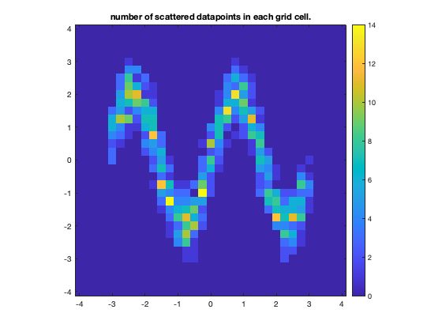

gridbin documentation
gridbin is a fast way to bin lots of scattered data into a gridded format. This function is similar to griddata with the nearest-neighbor option, except that gridbin only produces finite values in grid cells that contain finite scattered measurements. This function uses accumarray to calculate the mean (or other statistics) of all scattered data within each grid cell.
Contents
Syntax
vq = gridbin(x,y,v,xq,yq) vq = gridbin(...,@func) [vq,N] = gridbin(...)
Description
vq = gridbin(x,y,v,xq,yq) produces a 2D grid of values vq at the coordinates xq,yq. Inputs x,y,v may be scattered data, and the output vq is the mean of all scattered values v within each spatial bin.
vq = gridbin(...,@func) applies any function @func to the v data. By default, @func is @mean, meaning that vq contains the mean of all values v within each spatial bin.
[vq,N] = gridbin(...) also returns a grid N containing the number of observations v in each bin.
Example 1
Consider this gridded data:
% Load some sample data: [X,Y,Z] = peaks(500); figure pcolor(X,Y,Z) shading interp
For this example, we'll sample the peaks data at 1000 scattered point that will roughly follow a sinudoid:
N = 1000; % number of scattered data points xi = 6*(rand(N,1)-.5); yi = 2*sin(xi*2) + 0.5*randn(size(xi)); zi = interp2(X,Y,Z,xi,yi); hold on plot(xi,yi,'k.')
Here's what the scattered data looks like by itself:
figure scatter(xi,yi,15,zi,'filled','MarkerEdgeColor',.5*[1 1 1]);
Now take the mean of all scattered points on a grid of resolution 0.25:
res = 0.25; % resolution of the grid xs = -4:res:4; ys = 4:-res:-4; zs = gridbin(xi,yi,zi,xs,ys); figure h=imagesc(xs,ys,zs); h.AlphaData = isfinite(zs); axis xy image
If you have the Image Processing toolbox, you can try filling in the missing pixels with regionfill:
zs_filled = regionfill(zs,isnan(zs)); figure imagesc(xs,ys,zs_filled) axis xy image
And let's put it all together in one plot:
figure subplot(2,2,1) scatter(xi,yi,15,zi,'filled') title 'original scattered, interpolated data' axis equal off axis([-1 1 -1 1]*3) subplot(2,2,2) pcolor(X,Y,Z) shading interp title '(original full resolution data)' axis equal off axis([-1 1 -1 1]*3) subplot(2,2,3) h=imagesc(xs,ys,zs); h.AlphaData = isfinite(zs); axis xy off title 'gridbin from scattered data' axis equal axis([-1 1 -1 1]*3) subplot(2,2,4) imagesc(xs,ys,zs_filled) axis xy off title 'gridbin filled' axis equal axis([-1 1 -1 1]*3)
Example 2: Number of data points
An optional second output from the gridbin function gives the number of observations in each grid cell. So in the example above, we could have request the second output from the gridbin function like this:
[zs,N] = gridbin(xi,yi,zi,xs,ys); figure imagesc(xs,ys,N) axis xy image title 'number of scattered datapoints in each grid cell.' colorbar
Example 3: Other statistics
The gridbin function uses accumarray to accumulate the statistics of all scattered points within each grid cell. By default gridbin assumes you want the mean z value in each grid cell, but you can just as easily request other statistics, like standard deviation:
z_std = gridbin(xi,yi,zi,xs,ys,@std); figure imagesc(xs,ys,z_std) axis xy image title 'standard deviation of all data points in each grid cell.' colorbar colormap cool
Author Info
This function was written by Chad A. Greene of NASA's Jet Propulsion Laboratory, August 2021.